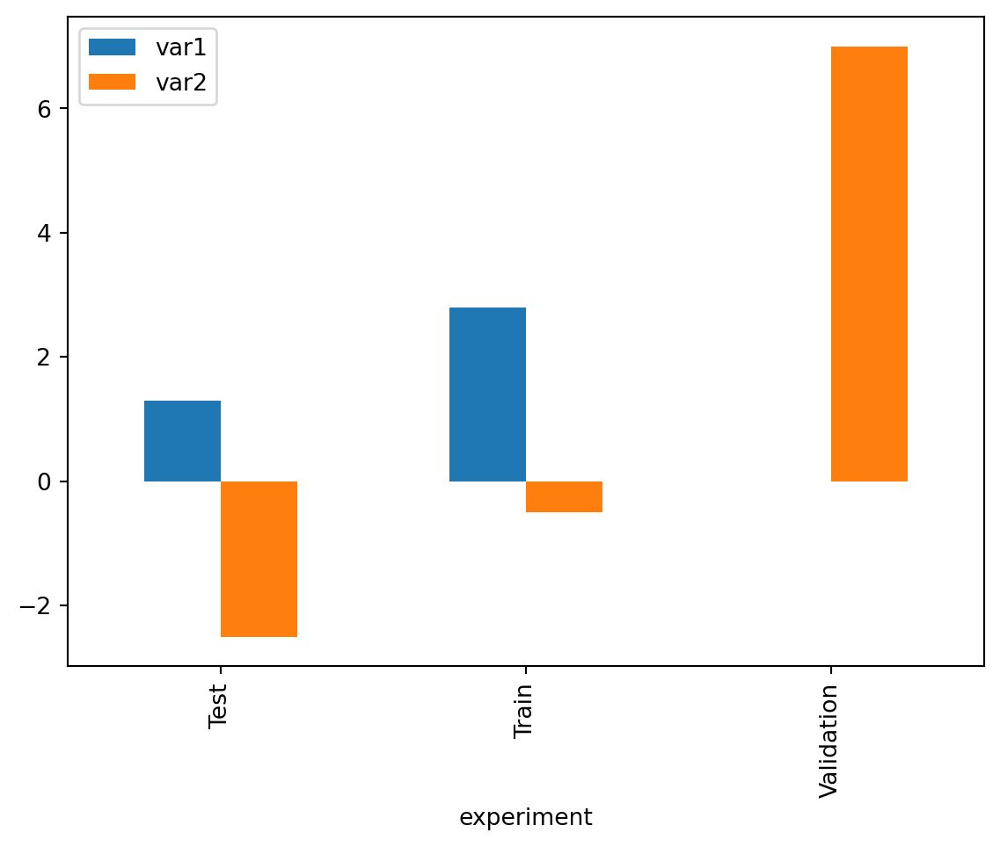

import pandas as pd
import numpy as npWorking with tabular data using Pandas
L’analyse statistique a généralement pour base des données tabulaires, dans lesquelles chaque ligne représente une observation et chaque colonne une variable. Pour traiter ce type de données et y appliquer facilement les méthodes d’analyse de données standards, des objets dédiés ont été conçus : les DataFrames. Les utilisateurs de R connaissent bien cette structure de données, qui est native à ce langage orienté statistique. En Python, langage généraliste, cet objet n’existe pas nativement. Heureusement, une librairie très complete et bien pratique, pensée comme une surcouche à NumPy, introduit en Python l’objet DataFrame et permet la manipulation et l’analyse de données de manière simple et intuitive : Pandas.
Note
Pandas étant l’élément central de l’éco-système data science en Python, il offre des possibilités de traitement de la donnée quasi-infinies. En plus de ça, il existe généralement de multiples manières de réaliser une même opération en Pandas. En conséquence, ce chapitre est particulièrement long et dense en nouvelles fonctionnalités. L’objectif n’est pas de retenir toutes les méthodes présentées tout au long de ce chapitre, mais plutôt d’avoir une vision générale de ce qu’il est possible de faire afin de pouvoir mobiliser les bons outils dans les projets. En particulier, les exercices de fin de chapitre et les mini-projets de fin de formation seront l’occasion d’appliquer ces nouvelles connaissances à des problématiques concrètes.
On commence par importer la librairie Pandas. L’usage est courant est de lui attribuer l’alias pd afin de simplifier les futurs appels aux objets et fonctions du package. On importe également NumPy car on va comparer les objets fondamentaux des deux packages.
Structures de données
Pour bien comprendre le fonctionnement de Pandas, il faut s’intéresser à ses objets fondamentaux. On va donc d’abord étudier les Series, dont la concaténation permet de construire un DataFrame.
La Series
Une Series est un conteneur de données unidimensionnel pouvant accueillir n’importe quel type de données (entiers, strings, objets Python…). Une Series est néanmoins d’un type donné : une Series ne contenant que des entiers sera de type int, et une Series contenant des objets de différente nature sera de type object. Construisons notre première Series à partir d’une liste pour vérifier ce comportement.
l = [1, "X", 3]
s = pd.Series(l)
print(s)0 1
1 X
2 3
dtype: objectOn peut notamment accéder aux données d’une Series par position, comme pour une liste ou un array.
print(s[1])XA priori, on ne voit pas beaucoup de différence entre une Series et un array NumPy à 1 dimension. Pourtant, il existe une différence de taille qui est la présence d’un index : les observations ont un label associé. Lorsqu’on crée une Series sans rien spécifier, l’index est automatiquement fixé aux entiers de 0 à n-1 (avec n le nombre d’éléments de la Series). Mais il est possible de passer un index spécifique (ex : des dates, des noms de communes, etc.).
s = pd.Series(l, index=["a", "b", "c"])
print(s)a 1
b X
c 3
dtype: objectCe qui permet d’accéder aux données par label :
s["b"]'X'Cette différence apparaît secondaire à première vue, mais deviendra essentielle pour la construction du DataFrame. Pour le reste, les Series se comportent de manière très proche des arrays NumPy : les calculs sont vectorisés, on peut directement faire la somme de deux Series, etc. D’ailleurs, on peut très facilement convertir une Series en array via l’attribut values. Ce qui, naturellement, fait perdre l’index…
s = pd.Series(l, index=["a", "b", "c"])
s.valuesarray([1, 'X', 3], dtype=object)Le DataFrame
Fondamentalement, un DataFrame consiste en une collection de Series, alignées par les index. Cette concaténation construit donc une table de données, dont les Series correspondent aux colonnes, et dont l’index identifie les lignes. La figure suivante (source) permet de bien comprendre cette structure de données.
Un DataFrame peut être construit de multiples manières. En pratique, on construit généralement un DataFrame directement à partir de fichiers de données tabulaires (ex : CSV, excel), rarement à la main. On illustrera donc seulement la méthode de construction manuelle la plus usuelle : à partir d’un dictionnaire de données.
df = pd.DataFrame(
data = {
"var1": [1.3, 5.6, np.nan, np.nan, 0, np.nan],
"var2": np.random.randint(-10, 10, 6),
"experiment": ["test", "train", "test", "train", "train", "validation"],
"date": ["2022-01-01", "2022-01-02", "2022-01-03", "2022-01-04", "2022-01-05", "2022-01-06"],
"sample": "sample1"
}
)
df| var1 | var2 | experiment | date | sample | |
|---|---|---|---|---|---|
| 0 | 1.3 | -3 | test | 2022-01-01 | sample1 |
| 1 | 5.6 | 5 | train | 2022-01-02 | sample1 |
| 2 | NaN | -10 | test | 2022-01-03 | sample1 |
| 3 | NaN | -9 | train | 2022-01-04 | sample1 |
| 4 | 0.0 | 2 | train | 2022-01-05 | sample1 |
| 5 | NaN | -9 | validation | 2022-01-06 | sample1 |
Un DataFrame Pandas dispose d’un ensemble d’attributs utiles que nous allons découvrir tout au long de ce tutoriel. Pour l’instant, intéressons-nous aux plus basiques : l’index et le nom des colonnes. Par défaut, l’index est initialisé comme pour les Series à la liste des positions des observations. On aurait pu spécifier un index alternatif lors de la construction du DataFrame en spécifiant l’argument index de la fonction pd.DataFrame.
df.indexRangeIndex(start=0, stop=6, step=1)df.columnsIndex(['var1', 'var2', 'experiment', 'date', 'sample'], dtype='object')Souvent, plutôt que de spécifier un index à la main lors de la construction du DataFrame, on va vouloir utiliser une certaine colonne du DataFrame comme index. On utilise pour cela la méthode set_index associée aux DataFrames.
df = df.set_index("date")
df| var1 | var2 | experiment | sample | |
|---|---|---|---|---|
| date | ||||
| 2022-01-01 | 1.3 | -3 | test | sample1 |
| 2022-01-02 | 5.6 | 5 | train | sample1 |
| 2022-01-03 | NaN | -10 | test | sample1 |
| 2022-01-04 | NaN | -9 | train | sample1 |
| 2022-01-05 | 0.0 | 2 | train | sample1 |
| 2022-01-06 | NaN | -9 | validation | sample1 |
L’attribut index a naturellement changé :
df.indexIndex(['2022-01-01', '2022-01-02', '2022-01-03', '2022-01-04', '2022-01-05',
'2022-01-06'],
dtype='object', name='date')Sélectionner des données
Lors de la manipulation des données tabulaires, il est fréquent de vouloir extraire des colonnes spécifiques d’un DataFrame. Cette extraction est simple avec Pandas grâce à l’utilisation des crochets.
Sélectionner des colonnes
Sélectionner une seule colonne
Pour extraire une seule colonne, on peut utiliser la syntaxe suivante :
selected_column = df["var1"]
selected_columndate
2022-01-01 1.3
2022-01-02 5.6
2022-01-03 NaN
2022-01-04 NaN
2022-01-05 0.0
2022-01-06 NaN
Name: var1, dtype: float64L’objet selected_column renvoie ici la colonne nommée var1 du DataFrame df. Mais de quel type est cet objet ? Pour répondre à cette question, on utilise la fonction type() :
type(selected_column)pandas.core.series.SeriesComme on peut le voir, le résultat est une Series, qui est un objet unidimensionnel dans Pandas.
Un autre attribut utile à connaître est shape. Il permet de connaître la dimension de l’objet. Pour une Series, shape retournera un tuple dont le premier élément indique le nombre de lignes.
selected_column.shape(6,)Sélectionner plusieurs colonnes
Pour extraire plusieurs colonnes, il suffit de passer une liste des noms des colonnes souhaitées :
selected_columns = df[["var1", "var2", "experiment"]]
selected_columns| var1 | var2 | experiment | |
|---|---|---|---|
| date | |||
| 2022-01-01 | 1.3 | -3 | test |
| 2022-01-02 | 5.6 | 5 | train |
| 2022-01-03 | NaN | -10 | test |
| 2022-01-04 | NaN | -9 | train |
| 2022-01-05 | 0.0 | 2 | train |
| 2022-01-06 | NaN | -9 | validation |
Cet extrait montre les colonnes var1, var2 et experiment du DataFrame df. Vérifions maintenant son type :
type(selected_columns)pandas.core.frame.DataFrameLe résultat est un DataFrame, car il s’agit d’un objet bidimensionnel. On peut aussi vérifier sa forme avec l’attribut shape. Dans ce cas, le tuple renvoyé par shape contiendra deux éléments : le nombre de lignes et le nombre de colonnes.
selected_columns.shape(6, 3)Sélectionner des lignes
Utilisation de loc et iloc
Lorsqu’on veut sélectionner des lignes spécifiques dans un DataFrame, on peut se servir des deux principales méthodes : loc et iloc.
ilocpermet de sélectionner des lignes et des colonnes par leur position, c’est-à-dire par des indices numériques.
Exemple, sélection des 3 premières lignes :
df.iloc[0:3, :]| var1 | var2 | experiment | sample | |
|---|---|---|---|---|
| date | ||||
| 2022-01-01 | 1.3 | -3 | test | sample1 |
| 2022-01-02 | 5.6 | 5 | train | sample1 |
| 2022-01-03 | NaN | -10 | test | sample1 |
locquant à lui, fonctionne avec des labels. Si les index du DataFrame sont des numéros, ils ressemblent aux positions, mais ce n’est pas forcément le cas. Il est crucial de noter que, contrairement àiloc, avecloc, l’index de fin est inclus dans la sélection.
df.loc["2022-01-01":"2022-01-03", :]| var1 | var2 | experiment | sample | |
|---|---|---|---|---|
| date | ||||
| 2022-01-01 | 1.3 | -3 | test | sample1 |
| 2022-01-02 | 5.6 | 5 | train | sample1 |
| 2022-01-03 | NaN | -10 | test | sample1 |
Filtrage des données selon des conditions
En pratique, plutôt que de sélectionner des lignes basées sur des positions ou des labels, on souhaite souvent filtrer un DataFrame selon certaines conditions. Dans ce cas, on se sert principalement de filtres booléens.
- Inégalités : On peut vouloir garder seulement les lignes qui respectent une certaine condition.
Exemple, filtrer les lignes où la valeur de la colonne var2 est supérieure à 0 :
df[df['var2'] >= 0]| var1 | var2 | experiment | sample | |
|---|---|---|---|---|
| date | ||||
| 2022-01-02 | 5.6 | 5 | train | sample1 |
| 2022-01-05 | 0.0 | 2 | train | sample1 |
- Appartenance avec
isin: Si on veut filtrer les données basées sur une liste de valeurs possibles, la méthodeisinest très utile.
Exemple, pour garder uniquement les lignes où la colonne experiment a des valeurs ‘test’ ou ‘validation’ :
df[df['experiment'].isin(['train', 'validation'])]| var1 | var2 | experiment | sample | |
|---|---|---|---|---|
| date | ||||
| 2022-01-02 | 5.6 | 5 | train | sample1 |
| 2022-01-04 | NaN | -9 | train | sample1 |
| 2022-01-05 | 0.0 | 2 | train | sample1 |
| 2022-01-06 | NaN | -9 | validation | sample1 |
Ces méthodes peuvent être combinées pour créer des conditions plus complexes. Il est aussi possible d’utiliser les opérateurs logiques (& pour “et”, | pour “ou”) pour combiner plusieurs conditions. Attention, il faut bien prendre soin d’encadrer chaque condition par des parenthèses lors de la combinaison.
Exemple, sélectionner les lignes où var2 est supérieur à 0 et experiment est égal à ‘test’ ou ‘validation’:
df[(df['var2'] >= 0) & (df['experiment'].isin(['train', 'validation']))]| var1 | var2 | experiment | sample | |
|---|---|---|---|---|
| date | ||||
| 2022-01-02 | 5.6 | 5 | train | sample1 |
| 2022-01-05 | 0.0 | 2 | train | sample1 |
Explorer des données tabulaires
En statistique publique, le point de départ n’est généralement pas la génération manuelle de données, mais plutôt des fichiers tabulaires préexistants. Ces fichiers, qu’ils soient issus d’enquêtes, de bases administratives ou d’autres sources, constituent la matière première pour toute analyse ultérieure. Pandas offre des outils puissants pour importer ces fichiers tabulaires et les explorer en vue de manipulations plus poussées.
Importer et exporter des données
Importer un fichier CSV
Comme nous l’avons vu dans un précédent TP, le format CSV est l’un des formats les plus courants pour stocker des données tabulaires. Nous avons précédemment utilisé la librairie csv pour les manipuler comme des fichiers texte, mais ce n’était pas très pratique. Pour rappel, la syntaxe pour lire un fichier CSV et afficher les premières lignes était la suivante :
import csv
rows = []
with open("data/departement2021.csv") as file_in:
csv_reader = csv.reader(file_in)
for row in csv_reader:
rows.append(row)
rows[:5][['DEP', 'REG', 'CHEFLIEU', 'TNCC', 'NCC', 'NCCENR', 'LIBELLE'],
['01', '84', '01053', '5', 'AIN', 'Ain', 'Ain'],
['02', '32', '02408', '5', 'AISNE', 'Aisne', 'Aisne'],
['03', '84', '03190', '5', 'ALLIER', 'Allier', 'Allier'],
['04',
'93',
'04070',
'4',
'ALPES DE HAUTE PROVENCE',
'Alpes-de-Haute-Provence',
'Alpes-de-Haute-Provence']]Avec Pandas, il suffit d’utiliser la fonction read_csv() pour importer le fichier comme un DataFrame, puis la fonction head().
df_departements = pd.read_csv('data/departement2021.csv')
df_departements.head()| DEP | REG | CHEFLIEU | TNCC | NCC | NCCENR | LIBELLE | |
|---|---|---|---|---|---|---|---|
| 0 | 01 | 84 | 01053 | 5 | AIN | Ain | Ain |
| 1 | 02 | 32 | 02408 | 5 | AISNE | Aisne | Aisne |
| 2 | 03 | 84 | 03190 | 5 | ALLIER | Allier | Allier |
| 3 | 04 | 93 | 04070 | 4 | ALPES DE HAUTE PROVENCE | Alpes-de-Haute-Provence | Alpes-de-Haute-Provence |
| 4 | 05 | 93 | 05061 | 4 | HAUTES ALPES | Hautes-Alpes | Hautes-Alpes |
Il est également possible d’importer un fichier CSV directement à partir d’une URL. C’est particulièrement pratique lorsque les données sont régulièrement mises à jour sur un site web et que l’on souhaite accéder à la version la plus récente sans avoir à télécharger manuellement le fichier à chaque fois. Prenons l’exemple d’un fichier CSV disponible sur le site de l’INSEE : le fichier des prénoms, issu des données de l’état civil. On note au passage une autre fonctionnalité bien pratique : le fichier CSV est compressé (format zip), mais Pandas est capable de le reconnaître et de le décompresser avant de l’importer.
# Importer un fichier CSV depuis une URL
url = "https://www.insee.fr/fr/statistiques/fichier/2540004/nat2021_csv.zip"
df_prenoms_url = pd.read_csv(url, sep=";")
df_prenoms_url.head()| sexe | preusuel | annais | nombre | |
|---|---|---|---|---|
| 0 | 1 | _PRENOMS_RARES | 1900 | 1249 |
| 1 | 1 | _PRENOMS_RARES | 1901 | 1342 |
| 2 | 1 | _PRENOMS_RARES | 1902 | 1330 |
| 3 | 1 | _PRENOMS_RARES | 1903 | 1286 |
| 4 | 1 | _PRENOMS_RARES | 1904 | 1430 |
Lorsqu’on travaille avec des fichiers CSV, il y a de nombreux arguments optionnels disponibles dans la fonction read_csv() qui permettent d’ajuster le processus d’importation en fonction des spécificités du fichier. Ces arguments peuvent notamment permettre de définir un délimiteur spécifique (comme ci-dessus pour le fichier des prénoms), de sauter certaines lignes en début de fichier, ou encore de définir les types de données pour chaque colonne, et bien d’autres. Tous ces paramètres et leur utilisation sont détaillés dans la documentation officielle.
Exporter au format CSV
Une fois que les données ont été traitées et modifiées au sein de Pandas, il est courant de vouloir exporter le résultat sous forme de fichier CSV pour le partager, l’archiver ou l’utiliser dans d’autres outils. Pandas offre une méthode simple pour cette opération : to_csv(). Supposons par exemple que l’on souhaite exporter les données du DataFrame df_departements spécifiques aux cinq départements d’outre-mer.
df_departements_dom = df_departements[df_departements["DEP"].isin(["971", "972", "973", "974", "975"])]
df_departements_dom.to_csv('output/departements2021_dom.csv')Un des arguments clés de la méthode to_csv() est index. Par défaut, index=True, ce qui signifie que l’index du DataFrame sera également écrit dans le fichier CSV. On peut le vérifier en imprimant les premières lignes de notre fichier CSV : Pandas a ajouté une colonne non-nommée, qui contient l’index des lignes retenues.
with open("output/departements2021_dom.csv") as file_in:
for i in range(5):
row = next(file_in).strip()
print(row),DEP,REG,CHEFLIEU,TNCC,NCC,NCCENR,LIBELLE
96,971,1,97105,3,GUADELOUPE,Guadeloupe,Guadeloupe
97,972,2,97209,3,MARTINIQUE,Martinique,Martinique
98,973,3,97302,3,GUYANE,Guyane,Guyane
99,974,4,97411,0,LA REUNION,La Réunion,La RéunionDans certains cas, notamment lorsque l’index n’apporte pas d’information utile ou est simplement généré automatiquement par Pandas, on pourrait vouloir l’exclure du fichier exporté. Pour ce faire, on peut définir index=False.
df_departements_dom.to_csv('output/departements2021_dom_noindex.csv', index=False)Importer un fichier Parquet
Le format Parquet est un autre format pour le stockage de données tabulaires, de plus en plus fréquemment utilisé. Sans entrer dans les détails techniques, le format Parquet présente différentes caractéristiques qui en font un choix privilégié pour le stockage et le traitement de gros volumes de données. En raison de ces avantages, ce format est de plus en plus utilisé pour la mise à disposition de données à l’Insee. Il est donc essentiel de savoir importer et requêter des fichiers Parquet avec Pandas.
Importer un fichier Parquet dans un DataFrame Pandas se fait tout aussi facilement que pour un fichier CSV. La fonction se nomme read_parquet().
df_departements = pd.read_parquet('data/departement2021.parquet')
df_departements.head()| DEP | REG | CHEFLIEU | TNCC | NCC | NCCENR | LIBELLE | |
|---|---|---|---|---|---|---|---|
| 0 | 01 | 84 | 01053 | 5 | AIN | Ain | Ain |
| 1 | 02 | 32 | 02408 | 5 | AISNE | Aisne | Aisne |
| 2 | 03 | 84 | 03190 | 5 | ALLIER | Allier | Allier |
| 3 | 04 | 93 | 04070 | 4 | ALPES DE HAUTE PROVENCE | Alpes-de-Haute-Provence | Alpes-de-Haute-Provence |
| 4 | 05 | 93 | 05061 | 4 | HAUTES ALPES | Hautes-Alpes | Hautes-Alpes |
Exporter au format Parquet
Là encore, tout se passe comme dans le monde des CSV : on utilise la méthode to_parquet() pour exporter un DataFrame dans un fichier Parquet. De même, on peut choisir d’exporter ou non l’index, à l’aide du paramètre index (qui vaut True par défaut).
df_departements_dom = df_departements[df_departements["DEP"].isin(["971", "972", "973", "974", "975"])]
df_departements_dom.to_parquet('output/departements2021_dom.parquet', index=False)Une des grandes forces du format Parquet, en comparaison des formats texte comme le CSV, est sa capacité à stocker des méta-données, i.e. des données permettant de mieux comprendre les données contenues dans le fichier. En particulier, un fichier Parquet inclut dans ses méta-données le schéma des données (noms des variables, types des variables, etc.), ce qui en fait un format très adapté à la diffusion de données. Vérifions ce comportement en reprenant le DataFrame que nous avons défini précédemment.
df = pd.DataFrame(
data = {
"var1": [1.3, 5.6, np.nan, np.nan, 0, np.nan],
"var2": np.random.randint(-10, 10, 6),
"experiment": ["test", "train", "test", "train", "train", "validation"],
"date": ["2022-01-01", "2022-01-02", "2022-01-03", "2022-01-04", "2022-01-05", "2022-01-06"],
"sample": "sample1"
}
)
df = df.assign(
experiment=pd.Categorical(df["experiment"]),
date=pd.to_datetime(df["date"])
)On utilise cette fois deux types de données spécifiques, pour les données catégorielles (category) et pour les données temporelles (datetime). On verra plus loin dans le tutoriel comment utiliser ces types. Pour l’instant, notons simplement que Pandas stocke ces types dans le schéma des données.
df.info()<class 'pandas.core.frame.DataFrame'>
RangeIndex: 6 entries, 0 to 5
Data columns (total 5 columns):
# Column Non-Null Count Dtype
--- ------ -------------- -----
0 var1 3 non-null float64
1 var2 6 non-null int64
2 experiment 6 non-null category
3 date 6 non-null datetime64[ns]
4 sample 6 non-null object
dtypes: category(1), datetime64[ns](1), float64(1), int64(1), object(1)
memory usage: 458.0+ bytesVérifions à présent que l’export et le ré-import de ces données en Parquet préserve le schéma.
df.to_parquet("output/df_test_schema.parquet", index=False)
df_test_schema_parquet = pd.read_parquet('output/df_test_schema.parquet')
df_test_schema_parquet.info()<class 'pandas.core.frame.DataFrame'>
RangeIndex: 6 entries, 0 to 5
Data columns (total 5 columns):
# Column Non-Null Count Dtype
--- ------ -------------- -----
0 var1 3 non-null float64
1 var2 6 non-null int64
2 experiment 6 non-null category
3 date 6 non-null datetime64[ns]
4 sample 6 non-null object
dtypes: category(1), datetime64[ns](1), float64(1), int64(1), object(1)
memory usage: 458.0+ bytesA l’inverse, un fichier CSV ne contenant par définition que du texte, ne permet pas de préserver ces données. Les variables dont nous avons spécifié le type sont importées comme des strings (type object en Pandas).
df.to_csv("output/df_test_schema.csv", index=False)
df_test_schema_csv = pd.read_csv('output/df_test_schema.csv')
df_test_schema_csv.info()<class 'pandas.core.frame.DataFrame'>
RangeIndex: 6 entries, 0 to 5
Data columns (total 5 columns):
# Column Non-Null Count Dtype
--- ------ -------------- -----
0 var1 3 non-null float64
1 var2 6 non-null int64
2 experiment 6 non-null object
3 date 6 non-null object
4 sample 6 non-null object
dtypes: float64(1), int64(1), object(3)
memory usage: 368.0+ bytesVisualiser un échantillon des données
Lorsqu’on travaille avec des jeux de données volumineux, il est souvent utile de visualiser rapidement un échantillon des données pour avoir une idée de leur structure, de leur format ou encore pour détecter d’éventuels problèmes. Pandas offre plusieurs méthodes pour cela.
La méthode head() permet d’afficher les premières lignes du DataFrame. Par défaut, elle retourne les 5 premières lignes, mais on peut spécifier un autre nombre en argument si nécessaire.
df_departements.head()| DEP | REG | CHEFLIEU | TNCC | NCC | NCCENR | LIBELLE | |
|---|---|---|---|---|---|---|---|
| 0 | 01 | 84 | 01053 | 5 | AIN | Ain | Ain |
| 1 | 02 | 32 | 02408 | 5 | AISNE | Aisne | Aisne |
| 2 | 03 | 84 | 03190 | 5 | ALLIER | Allier | Allier |
| 3 | 04 | 93 | 04070 | 4 | ALPES DE HAUTE PROVENCE | Alpes-de-Haute-Provence | Alpes-de-Haute-Provence |
| 4 | 05 | 93 | 05061 | 4 | HAUTES ALPES | Hautes-Alpes | Hautes-Alpes |
df_departements.head(10)| DEP | REG | CHEFLIEU | TNCC | NCC | NCCENR | LIBELLE | |
|---|---|---|---|---|---|---|---|
| 0 | 01 | 84 | 01053 | 5 | AIN | Ain | Ain |
| 1 | 02 | 32 | 02408 | 5 | AISNE | Aisne | Aisne |
| 2 | 03 | 84 | 03190 | 5 | ALLIER | Allier | Allier |
| 3 | 04 | 93 | 04070 | 4 | ALPES DE HAUTE PROVENCE | Alpes-de-Haute-Provence | Alpes-de-Haute-Provence |
| 4 | 05 | 93 | 05061 | 4 | HAUTES ALPES | Hautes-Alpes | Hautes-Alpes |
| 5 | 06 | 93 | 06088 | 4 | ALPES MARITIMES | Alpes-Maritimes | Alpes-Maritimes |
| 6 | 07 | 84 | 07186 | 5 | ARDECHE | Ardèche | Ardèche |
| 7 | 08 | 44 | 08105 | 4 | ARDENNES | Ardennes | Ardennes |
| 8 | 09 | 76 | 09122 | 5 | ARIEGE | Ariège | Ariège |
| 9 | 10 | 44 | 10387 | 5 | AUBE | Aube | Aube |
À l’inverse, la méthode tail() donne un aperçu des dernières lignes du DataFrame.
df_departements.tail()| DEP | REG | CHEFLIEU | TNCC | NCC | NCCENR | LIBELLE | |
|---|---|---|---|---|---|---|---|
| 96 | 971 | 1 | 97105 | 3 | GUADELOUPE | Guadeloupe | Guadeloupe |
| 97 | 972 | 2 | 97209 | 3 | MARTINIQUE | Martinique | Martinique |
| 98 | 973 | 3 | 97302 | 3 | GUYANE | Guyane | Guyane |
| 99 | 974 | 4 | 97411 | 0 | LA REUNION | La Réunion | La Réunion |
| 100 | 976 | 6 | 97608 | 0 | MAYOTTE | Mayotte | Mayotte |
L’affichage des premières ou dernières lignes peut parfois ne pas être représentatif de l’ensemble du jeu de données, lorsque les données sont triées par exemple. Afin de minimiser le risque d’obtenir un aperçu biaisé des données, on peut utiliser la méthode sample(), qui sélectionne un un échantillon aléatoire de lignes. Par défaut, elle retourne une seule ligne, mais on peut demander un nombre spécifique de lignes en utilisant l’argument n.
df_departements.sample(n=5)| DEP | REG | CHEFLIEU | TNCC | NCC | NCCENR | LIBELLE | |
|---|---|---|---|---|---|---|---|
| 77 | 77 | 11 | 77288 | 0 | SEINE ET MARNE | Seine-et-Marne | Seine-et-Marne |
| 99 | 974 | 4 | 97411 | 0 | LA REUNION | La Réunion | La Réunion |
| 13 | 14 | 28 | 14118 | 2 | CALVADOS | Calvados | Calvados |
| 28 | 2A | 94 | 2A004 | 3 | CORSE DU SUD | Corse-du-Sud | Corse-du-Sud |
| 43 | 43 | 84 | 43157 | 3 | HAUTE LOIRE | Haute-Loire | Haute-Loire |
Obtenir une vue d’ensemble des données
L’une des premières étapes lors de l’exploration de nouvelles données est de comprendre la structure générale du jeu de données. La méthode info() de Pandas offre une vue d’ensemble rapide des données, notamment en termes de types de données, de présence de valeurs manquantes et de mémoire utilisée.
df.info()<class 'pandas.core.frame.DataFrame'>
RangeIndex: 6 entries, 0 to 5
Data columns (total 5 columns):
# Column Non-Null Count Dtype
--- ------ -------------- -----
0 var1 3 non-null float64
1 var2 6 non-null int64
2 experiment 6 non-null category
3 date 6 non-null datetime64[ns]
4 sample 6 non-null object
dtypes: category(1), datetime64[ns](1), float64(1), int64(1), object(1)
memory usage: 458.0+ bytesPlusieurs éléments d’information clés peuvent être extraits de ce résultat :
index : le DataFrame a un
RangeIndex, ce qui signifie que l’index est constitué d’une suite numérique simple. Ici, l’index va de 0 à 5, soit 6 entrées au total.schéma : la liste des colonnes est affichée avec des informations très utiles sur le schéma des données :
Non-Null Count : le nombre de valeurs non-manquantes (non
nan) dans la colonne. Si ce nombre est inférieur au nombre total d’entrées (dans notre cas, 6), cela signifie que la colonne contient des valeurs manquantes. Attention à l’ambiguité possible sur “null” : cela signifie bien les valeurs manquantes, pas les valeurs égales à 0. Ainsi, dans notre cas, le nombre de valeurs “non-null” pour la variablevar1est 5.Dtype : Le type de données de la colonne, qui permet decomprendre la nature des informations stockées dans chaque colonne. Par exemple,
float64(nombres réels),int32(nombres entiers),category(variable catégorielle),datetime64[ns](information temporelle) etobject(données textuelles ou mixtes).
L’utilisation de info() est un moyen rapide et efficace d’obtenir une vue d’ensemble d’un DataFrame, d’identifier rapidement les colonnes contenant des valeurs manquantes et de comprendre la structure des données.
Calculer des statistiques descriptives
En complément des informations renvoyées par la méthode info(), on peut vouloir obtenir des statistiques descriptives simples afin de visualiser rapidement les distributions des variables. La méthode describe() permet d’avoir une vue synthétique de la distribution des données dans chaque colonne.
df.describe()| var1 | var2 | date | |
|---|---|---|---|
| count | 3.00000 | 6.000000 | 6 |
| mean | 2.30000 | 0.166667 | 2022-01-03 12:00:00 |
| min | 0.00000 | -10.000000 | 2022-01-01 00:00:00 |
| 25% | 0.65000 | -4.250000 | 2022-01-02 06:00:00 |
| 50% | 1.30000 | 4.000000 | 2022-01-03 12:00:00 |
| 75% | 3.45000 | 4.750000 | 2022-01-04 18:00:00 |
| max | 5.60000 | 5.000000 | 2022-01-06 00:00:00 |
| std | 2.93087 | 6.794606 | NaN |
Il est à noter que describe() ne renvoie des statistiques que pour les colonnes numériques par défaut. Si l’on souhaite inclure des colonnes d’autres types, il est nécessaire de le préciser via l’argument include. Par exemple, df.describe(include='all') renverra des statistiques pour toutes les colonnes, y compris des métriques comme le nombre unique, la valeur la plus fréquente et la fréquence de la valeur la plus fréquente pour les colonnes non numériques.
df.describe(include='all')| var1 | var2 | experiment | date | sample | |
|---|---|---|---|---|---|
| count | 3.00000 | 6.000000 | 6 | 6 | 6 |
| unique | NaN | NaN | 3 | NaN | 1 |
| top | NaN | NaN | train | NaN | sample1 |
| freq | NaN | NaN | 3 | NaN | 6 |
| mean | 2.30000 | 0.166667 | NaN | 2022-01-03 12:00:00 | NaN |
| min | 0.00000 | -10.000000 | NaN | 2022-01-01 00:00:00 | NaN |
| 25% | 0.65000 | -4.250000 | NaN | 2022-01-02 06:00:00 | NaN |
| 50% | 1.30000 | 4.000000 | NaN | 2022-01-03 12:00:00 | NaN |
| 75% | 3.45000 | 4.750000 | NaN | 2022-01-04 18:00:00 | NaN |
| max | 5.60000 | 5.000000 | NaN | 2022-01-06 00:00:00 | NaN |
| std | 2.93087 | 6.794606 | NaN | NaN | NaN |
Notons que, là encore, la variable count renvoie le nombre de valeurs non-manquantes dans chaque variable.
Principales manipulations de données
Transformer les données
Les opérations de transformation sur les données sont essentielles pour façonner, nettoyer et préparer les données en vue de leur analyse. Les transformations peuvent concerner l’ensemble du DataFrame, des colonnes spécifiques ou encore des lignes spécifiques.
Transformer un DataFrame
Pour transformer un DataFrame complet (ou un sous-DataFrame), il est possible d’utiliser des fonctions vectorisées, qui permettent d’appliquer rapidement une opération à l’ensemble des éléments du DataFrame. Cela inclut un certain nombre de méthodes disponibles pour les Series, mais aussi les fonctions mathématiques de NumPy, etc.
Par exemple, passer chaque valeur numérique d’un DataFrame à la puissance 2 :
df = pd.DataFrame(
data = {
"var1": [1.3, 5.6, np.nan, np.nan, 0, np.nan],
"var2": np.random.randint(-10, 10, 6),
}
)
df ** 2| var1 | var2 | |
|---|---|---|
| 0 | 1.69 | 1 |
| 1 | 31.36 | 25 |
| 2 | NaN | 0 |
| 3 | NaN | 81 |
| 4 | 0.00 | 1 |
| 5 | NaN | 1 |
ou les passer en valeur absolue :
np.abs(df)| var1 | var2 | |
|---|---|---|
| 0 | 1.3 | 1 |
| 1 | 5.6 | 5 |
| 2 | NaN | 0 |
| 3 | NaN | 9 |
| 4 | 0.0 | 1 |
| 5 | NaN | 1 |
Certaines méthodes, disponibles pour les Series, peuvent aussi être utilisées pour transformer un DataFrame complet. Par exemple, la bien utile méthode replace(), qui permet de remplacer toutes les occurences d’une valeur donnée par une autre valeur. Par exemple, supposons que la valeur 0 dans la colonne var1 indique en fait une erreur de mesure. Il serait préférable de la remplacer par une valeur manquante.
df.replace(0, np.nan)| var1 | var2 | |
|---|---|---|
| 0 | 1.3 | 1.0 |
| 1 | 5.6 | 5.0 |
| 2 | NaN | NaN |
| 3 | NaN | 9.0 |
| 4 | NaN | 1.0 |
| 5 | NaN | 1.0 |
Assignation ou méthodes in place (en place) ?
Dans l’exemple précédent, l’application de la méthode replace() ne modifie pas directement le DataFrame. Pour que la modifiction soit persistente, une première possibilité est d’assigner le résultat à un objet :
df = df.replace(0, np.nan)Une seconde possibilité est, lorsque les méthodes le proposent, d’utiliser l’argument inplace. Lorsque inplace=True, l’opération est effectuée “en place”, et le DataFrame est donc modifié directement.
df.replace(0, np.nan, inplace=True)En pratique, il est préférable de limiter les opérations inplace. Elles ne favorisent pas la reproductibilité des analyses, dans la mesure où la ré-exécution d’une même cellule va donner à chaque fois des résultats différents.
Transformer les colonnes
Dans certains cas, on ne va pas vouloir appliquer les transformations à l’ensemble des données, mais à des variables spécifiques. Les transformations qui sont possibles à l’échelle du DataFrame (fonctions vectorisées, méthodes comme replace(), etc.) restent naturellement possibles à l’échelle d’une colonne.
df = pd.DataFrame(
data = {
"var1": [1.3, 5.6, np.nan, np.nan, 0, np.nan],
"var2": np.random.randint(-10, 10, 6),
}
)
np.abs(df["var2"])0 7
1 3
2 10
3 4
4 5
5 8
Name: var2, dtype: int64df["var1"].replace(0, np.nan)0 1.3
1 5.6
2 NaN
3 NaN
4 NaN
5 NaN
Name: var1, dtype: float64Mais il existe d’autres transformations que l’on applique généralement au niveau d’une ou de quelques colonnes. Par exemple, lorsque le schéma n’a pas été bien reconnu à l’import, il peut arriver que des variables numériques soient définies comme des string (type object en Pandas).
df = pd.DataFrame(
data = {
"var1": [1.3, 5.6, np.nan],
"var2": ["1", "5", "18"],
}
)
df.info()<class 'pandas.core.frame.DataFrame'>
RangeIndex: 3 entries, 0 to 2
Data columns (total 2 columns):
# Column Non-Null Count Dtype
--- ------ -------------- -----
0 var1 2 non-null float64
1 var2 3 non-null object
dtypes: float64(1), object(1)
memory usage: 176.0+ bytesDans ce cas, on peut utiliser la méthode astype pour convertir la colonne dans le type souhaité.
df['var2'] = df['var2'].astype(int)
df.info()<class 'pandas.core.frame.DataFrame'>
RangeIndex: 3 entries, 0 to 2
Data columns (total 2 columns):
# Column Non-Null Count Dtype
--- ------ -------------- -----
0 var1 2 non-null float64
1 var2 3 non-null int64
dtypes: float64(1), int64(1)
memory usage: 176.0 bytesUne autre opération fréquente est le renommage d’une ou plusieurs colonnes. Pour cela, on peut utiliser la méthode rename(), à laquelle on passe un dictionnaire qui contient autant de couples clé-valeur que de variables à renommer, et dans lequel chaque couple clé-valeur est de la forme 'ancien_nom': 'nouveau_nom'.
df.rename(columns={'var2': 'age'})| var1 | age | |
|---|---|---|
| 0 | 1.3 | 1 |
| 1 | 5.6 | 5 |
| 2 | NaN | 18 |
Enfin, on peut souhaiter supprimer du DataFrame des colonnes qui ne sont pas ou plus utiles à l’analyse. Pour cela, on utilise la méthode drop(), à laquelle on passe soit un string (nom d’une colonne si l’on souhaite n’en supprimer qu’une seule) ou une liste de noms de colonne à supprimer.
df.drop(columns=['var1'])| var2 | |
|---|---|
| 0 | 1 |
| 1 | 5 |
| 2 | 18 |
Transformer les lignes
En statistiques, on applique généralement des tranformations faisant intervenir une ou plusieurs colonnes. Néanmoins, dans certains cas, il est nécessaire d’appliquer des transformations au niveau des lignes. Pour cela, on peut utiliser la méthode apply() de Pandas, appliquée à l’axe des lignes (axis=1). Illustrons son fonctionnement avec un cas simple. Pour cela, on génère d’abord des données.
df = pd.DataFrame(
data = {
"var1": [1, 5, 9, 13],
"var2": [3, 7, 11, 15],
"date": ["2022-01-01", "2022-01-02", "2022-01-03", "2022-01-04"],
}
)
df.head()| var1 | var2 | date | |
|---|---|---|---|
| 0 | 1 | 3 | 2022-01-01 |
| 1 | 5 | 7 | 2022-01-02 |
| 2 | 9 | 11 | 2022-01-03 |
| 3 | 13 | 15 | 2022-01-04 |
On applique maintenant la fonction apply() au DataFrame afin de calculer une nouvelle variable qui est la somme des deux existantes.
df['sum_row'] = df.apply(lambda row: row['var1'] + row['var2'], axis=1)
df.head()| var1 | var2 | date | sum_row | |
|---|---|---|---|---|
| 0 | 1 | 3 | 2022-01-01 | 4 |
| 1 | 5 | 7 | 2022-01-02 | 12 |
| 2 | 9 | 11 | 2022-01-03 | 20 |
| 3 | 13 | 15 | 2022-01-04 | 28 |
Les fonctions lambda
Une fonction lambda est une petite fonction anonyme. Elle peut prendre n’importe quel nombre d’arguments, mais ne peut avoir qu’une seule expression. Dans l’exemple ci-dessus, la fonction lambda prend une ligne en argument et renvoie la somme des colonnes var1 et var2 pour cette ligne.
Les fonctions lambda permettent de définir simplement des fonctions “à la volée”, sans devoir leur donner un nom. Dans notre exemple, cela aurait été parfaitement équivalent au code suivant :
def sum_row(row):
return row['var1'] + row['var2']
df['sum_row'] = df.apply(sum_row, axis=1)Bien que apply() offre une grande flexibilité, elle n’est pas la méthode la plus efficiente, notamment pour de grands jeux de données. Les opérations vectorisées sont toujours préférables car elles traitent les données en bloc plutôt que ligne par ligne. Dans notre cas, il aurait été bien entendu préférable de créer notre variable en utilisant des opérations sur les colonnes.
df['sum_row_vect'] = df['var1'] + df['var2']
df.head()| var1 | var2 | date | sum_row | sum_row_vect | |
|---|---|---|---|---|---|
| 0 | 1 | 3 | 2022-01-01 | 4 | 4 |
| 1 | 5 | 7 | 2022-01-02 | 12 | 12 |
| 2 | 9 | 11 | 2022-01-03 | 20 | 20 |
| 3 | 13 | 15 | 2022-01-04 | 28 | 28 |
Néanmoins, on peut se retrouver dans certains (rares) cas où une opération ne peut pas être facilement vectorisée ou où la logique est complexe. Supposons par exemple que l’on souhaite combiner les valeurs de plusieurs colonnes en fonction de certaines conditions.
def combine_columns(row):
if row['var1'] > 6:
return str(row['var2'])
else:
return str(row['var2']) + "_" + row['date']
df['combined_column'] = df.apply(combine_columns, axis=1)
df| var1 | var2 | date | sum_row | sum_row_vect | combined_column | |
|---|---|---|---|---|---|---|
| 0 | 1 | 3 | 2022-01-01 | 4 | 4 | 3_2022-01-01 |
| 1 | 5 | 7 | 2022-01-02 | 12 | 12 | 7_2022-01-02 |
| 2 | 9 | 11 | 2022-01-03 | 20 | 20 | 11 |
| 3 | 13 | 15 | 2022-01-04 | 28 | 28 | 15 |
Trier les valeurs
Le tri des données est particulièrement utile pour l’exploration et la visualisation de données. Avec Pandas, on utilise la méthode sort_values() pour trier les valeurs d’un DataFrame selon une ou plusieurs colonnes.
df = pd.DataFrame(
data = {
"var1": [1, 5, 9, 13],
"var2": [3, 7, 11, 15],
"date": ["2022-01-01", "2022-01-02", "2022-01-03", "2022-01-04"],
}
)
df| var1 | var2 | date | |
|---|---|---|---|
| 0 | 1 | 3 | 2022-01-01 |
| 1 | 5 | 7 | 2022-01-02 |
| 2 | 9 | 11 | 2022-01-03 |
| 3 | 13 | 15 | 2022-01-04 |
Pour trier les valeurs selon une seule colonne, il suffit de passer le nom de la colonne en paramètre.
df.sort_values(by='var1')| var1 | var2 | date | |
|---|---|---|---|
| 0 | 1 | 3 | 2022-01-01 |
| 1 | 5 | 7 | 2022-01-02 |
| 2 | 9 | 11 | 2022-01-03 |
| 3 | 13 | 15 | 2022-01-04 |
Par défaut, le tri est effectué dans l’ordre croissant. Pour trier les valeurs dans un ordre décroissant, il suffit de paramétrer ascending=False.
df.sort_values(by='var1', ascending=False)| var1 | var2 | date | |
|---|---|---|---|
| 3 | 13 | 15 | 2022-01-04 |
| 2 | 9 | 11 | 2022-01-03 |
| 1 | 5 | 7 | 2022-01-02 |
| 0 | 1 | 3 | 2022-01-01 |
Si on souhaite trier le DataFrame sur plusieurs colonnes, on peut fournir une liste de noms de colonnes. On peut également choisir de trier de manière croissante pour certaines colonnes et décroissante pour d’autres.
Agréger des données
L’agrégation des données est un processus dans lequel les données vont être ventilées en groupes selon certains critères, puis agrégées selon une fonction d’agrégation appliquée indépendamment à chaque groupe. Cette opération est courante lors de l’analyse exploratoire ou lors du prétraitement des données pour la visualisation ou la modélisation statistique.
df = pd.DataFrame(
data = {
"var1": [1.3, 5.6, np.nan, np.nan, 0, np.nan],
"var2": np.random.randint(-10, 10, 6),
"experiment": ["test", "train", "test", "train", "train", "validation"],
"date": ["2022-01-01", "2022-01-02", "2022-01-03", "2022-01-04", "2022-01-05", "2022-01-06"],
"sample": "sample1"
}
)
df.head()| var1 | var2 | experiment | date | sample | |
|---|---|---|---|---|---|
| 0 | 1.3 | -6 | test | 2022-01-01 | sample1 |
| 1 | 5.6 | -4 | train | 2022-01-02 | sample1 |
| 2 | NaN | 3 | test | 2022-01-03 | sample1 |
| 3 | NaN | -1 | train | 2022-01-04 | sample1 |
| 4 | 0.0 | -2 | train | 2022-01-05 | sample1 |
L’opération groupBy
La méthode groupBy de Pandas permet de diviser le DataFrame en sous-ensembles selon les valeurs d’une ou plusieurs colonnes, puis d’appliquer une fonction d’agrégation à chaque sous-ensemble. Elle renvoie un objet de type DataFrameGroupBy qui ne présente pas de grand intérêt en soi, mais constitue l’étape intermédiaire indispensable pour pouvoir ensuite appliquer une ou plusieurs fonction(s) d’agrégation aux différents groupes.
df.groupby('experiment')<pandas.core.groupby.generic.DataFrameGroupBy object at 0x7f6a1c8eeb60>Fonctions d’agrégation
Une fois les données groupées, on peut appliquer des fonctions d’agrégation pour obtenir un résumé statistique. Pandas intègre un certain nombre de ces fonctions, dont la liste complète est détaillée dans la documentation. Voici quelques exemples d’utilisation de ces méthodes.
Par exemple, compter le nombre d’occurrences dans chaque groupe.
df.groupby('experiment').size()experiment
test 2
train 3
validation 1
dtype: int64Calculer la somme d’une variable par groupe.
df.groupby('experiment')['var1'].sum()experiment
test 1.3
train 5.6
validation 0.0
Name: var1, dtype: float64Ou encore compter le nombre de valeurs unique d’une variable par groupe. Les possibilités sont nombreuses.
# Pour le nombre de valeurs uniques de 'var2' dans chaque groupe
df.groupby('experiment')['var2'].nunique()experiment
test 2
train 3
validation 1
Name: var2, dtype: int64Lorsqu’on souhaite appliquer plusieurs fonctions d’agrégation à la fois ou des fonctions personnalisées, on utilise la méthode agg. Cette méthode accepte une liste de fonctions ou un dictionnaire qui associe les noms des colonnes aux fonctions à appliquer. Cela permet d’appliquer plus finement les fonctions d’agrégation.
df.groupby('experiment').agg({'var1': 'mean', 'var2': 'count'})| var1 | var2 | |
|---|---|---|
| experiment | ||
| test | 1.3 | 2 |
| train | 2.8 | 3 |
| validation | NaN | 1 |
Le chaînage de méthodes
Les exemples précédents illustrent un concept important en Pandas : le chaînage de méthodes. Ce terme désigne la possibilité d’enchaîner les transformations appliquées à un DataFrame en lui appliquant à la chaîne des méthodes. A chaque méthode appliquée, un DataFrame intermédiaire est créé (mais non assigné à une variable), qui devient l’input de la méthode suivante.
Le chaînage de méthodes permet de combiner plusieurs opérations en une seule expression de code. Cela peut améliorer l’efficacité en évitant les assignations intermédiaires et en rendant le code plus fluide et plus facile à lire. Cela favorise également un style de programmation fonctionnel où les données passent à travers une chaîne de transformations de manière fluide.
Effets sur l’index
Il est intéressant de noter les effets du processus d’agrégation sur l’index du DataFrame. Le dernier exemple ci-dessus l’illustre bien : les groupes, i.e. les modalités de la variable utilisée pour effectuer l’agrégation, deviennent les valeurs de l’index.
On peut vouloir réutiliser cette information dans des analyses ultérieures, et donc la vouloir comme une colonne. Il suffit pour cela de réinitialiser l’index avec la méthode reset_index().
df_agg = df.groupby('experiment').agg({'var1': 'mean', 'var2': 'count'})
df_agg.reset_index()| experiment | var1 | var2 | |
|---|---|---|---|
| 0 | test | 1.3 | 2 |
| 1 | train | 2.8 | 3 |
| 2 | validation | NaN | 1 |
Traiter les valeurs manquantes
Les valeurs manquantes sont une réalité courante dans le traitement des données réelles et peuvent survenir pour diverses raisons, telles que des non-réponses à un questionnaire, des erreurs de saisie, des pertes de données lors de la transmission ou simplement parce que l’information n’est pas applicable. Pandas offre plusieurs outils pour gérer les valeurs manquantes.
Représentation des valeurs manquantes
Dans Pandas, les valeurs manquantes sont généralement représentées par np.nan, qui est un marqueur spécial fourni par la bibliothèque NumPy. S’il est préférable d’utiliser cet objet pour dénoter les valeurs manquantes, notons que l’objet None de Python est également compris comme une valeur manquante par Pandas.
Vérifions cette propriété. Pour identifier où se trouvent les valeurs manquantes, on utilise la fonction isna() qui retourne un DataFrame booléen indiquant True là où les valeurs sont NaN.
df = pd.DataFrame(
data = {
"var1": [1.3, 5.6, np.nan, np.nan, 0, np.nan],
"var2": np.random.randint(-10, 10, 6),
"experiment": ["test", "train", "test", None, "train", "validation"],
"sample": "sample1"
}
)
df.isna()| var1 | var2 | experiment | sample | |
|---|---|---|---|---|
| 0 | False | False | False | False |
| 1 | False | False | False | False |
| 2 | True | False | False | False |
| 3 | True | False | True | False |
| 4 | False | False | False | False |
| 5 | True | False | False | False |
Calculs sur des colonnes contenant des valeurs manquantes
Lors de calculs statistiques, les valeurs manquantes sont généralement ignorées. Par exemple, la méthode .mean() calcule la moyenne des valeurs non manquantes.
df['var1'].mean()np.float64(2.3)En revanche, les calculs faisant intervenir plusieurs colonnes n’ignorent pas toujours les valeurs manquantes et peuvent souvent donner des résultats en NaN.
df['var3'] = df['var1'] + df['var2']
df| var1 | var2 | experiment | sample | var3 | |
|---|---|---|---|---|---|
| 0 | 1.3 | -7 | test | sample1 | -5.7 |
| 1 | 5.6 | -7 | train | sample1 | -1.4 |
| 2 | NaN | -6 | test | sample1 | NaN |
| 3 | NaN | 6 | None | sample1 | NaN |
| 4 | 0.0 | -3 | train | sample1 | -3.0 |
| 5 | NaN | 3 | validation | sample1 | NaN |
Suppression des valeurs manquantes
La méthode dropna() permet de supprimer les lignes (axis=0) ou les colonnes (axis=1) contenant des valeurs manquantes. Par défaut, toute ligne contenant au moins une valeur manquante est supprimée.
df.dropna()| var1 | var2 | experiment | sample | var3 | |
|---|---|---|---|---|---|
| 0 | 1.3 | -7 | test | sample1 | -5.7 |
| 1 | 5.6 | -7 | train | sample1 | -1.4 |
| 4 | 0.0 | -3 | train | sample1 | -3.0 |
En modifiant le paramètre axis, on peut demander à ce que toute colonne contenant au moins une valeur manquante soit supprimée.
df.dropna(axis=1)| var2 | sample | |
|---|---|---|
| 0 | -7 | sample1 |
| 1 | -7 | sample1 |
| 2 | -6 | sample1 |
| 3 | 6 | sample1 |
| 4 | -3 | sample1 |
| 5 | 3 | sample1 |
Enfin, le paramètre how définit la modalité de supression. Par défaut, une ligne ou colonne est supprimée lorsqu’au moins une valeur est manquante (how=any), mais il est possible de ne supprimer la ligne/colonne que lorsque toutes les valeurs sont manquantes (how=all).
Remplacement des valeurs manquantes
Pour gérer les valeurs manquantes dans un DataFrame, une approche commune est l’imputation, qui consiste à remplacer les valeurs manquantes par d’autres valeurs. La méthode fillna() permet d’effectuer cette opération de différentes manières. Une première possibilité est le remplacement par une valeur constante.
df['var1'].fillna(value=0)0 1.3
1 5.6
2 0.0
3 0.0
4 0.0
5 0.0
Name: var1, dtype: float64
Changement de représentation des valeurs manquantes
On peut parfois être tentant de changer la manifestation d’une valeur manquante pour des raisons de visibilité, par exemple en la remplaçant par une chaîne de caractères :
df['var1'].fillna(value="MISSING")0 1.3
1 5.6
2 MISSING
3 MISSING
4 0.0
5 MISSING
Name: var1, dtype: objectEn pratique, cette façon de faire n’est pas recommandée. Il est en effet préférable de conserver la convention standard de Pandas (l’utilisation des np.nan), d’abord pour des questions de standardisation des pratiques qui facilitent la lecture et la maintenance du code, mais également parce que la convention standard est optimisée pour la performance et les calculs à partir de données contenant des valeurs manquantes.
Une autre méthode d’imputation fréquente est d’utiliser une valeur statistique, comme la moyenne ou la médiane de la variable.
df['var1'].fillna(value=df['var1'].mean())0 1.3
1 5.6
2 2.3
3 2.3
4 0.0
5 2.3
Name: var1, dtype: float64
Biais d’imputation
Remplacer les valeurs manquantes par une valeur constante, telle que zéro, la moyenne ou la médiane, peut être problématique. Si les données ne sont pas manquantes au hasard (Missing Not At Random - MNAR), cela peut introduire un biais dans l’analyse. Les variables MNAR sont des variables dont la probabilité d’être manquantes est liée à leur propre valeur ou à d’autres variables dans les données. Dans de tels cas, une imputation plus sophistiquée peut être nécessaire pour minimiser les distorsions. Nous en verrons un exemple en exercice de fin de tutoriel.
Traiter les données de types spécifiques
Données textuelles
Les données textuelles nécessitent souvent un nettoyage et une préparation avant l’analyse. Pandas fournit via la librairie de méthodes str un ensemble d’opérations vectorisées qui rendent la préparation des données textuelles à la fois simple et très efficace. Là encore, les possibilités sont multiples et détaillées dans la documentation. Nous présentons ici les méthodes les plus fréquemment utilisées dans l’analyse de données.
df = pd.DataFrame(
data = {
"var1": [1.3, 5.6, np.nan, np.nan, 0, np.nan],
"var2": np.random.randint(-10, 10, 6),
"experiment": ["test", "train", "test", "test", "train", "validation"],
"sample": [" sample1", "sample1", "sample2", " sample2 ", "sample2 ", "sample1"]
}
)
df| var1 | var2 | experiment | sample | |
|---|---|---|---|---|
| 0 | 1.3 | 7 | test | sample1 |
| 1 | 5.6 | 8 | train | sample1 |
| 2 | NaN | 3 | test | sample2 |
| 3 | NaN | 6 | test | sample2 |
| 4 | 0.0 | -6 | train | sample2 |
| 5 | NaN | 0 | validation | sample1 |
Une première opération fréquente consiste à extraire certains caractères d’une chaîne. On utilise pour cela la fonction (à la syntaxe un peu particulière) str[n:] Par exemple, si l’on veut extraire le dernier caractère de la variable sample afin de ne retenir que le chiffre de l’échantillon.
df["sample_n"] = df["sample"].str[-1:]
df| var1 | var2 | experiment | sample | sample_n | |
|---|---|---|---|---|---|
| 0 | 1.3 | 7 | test | sample1 | 1 |
| 1 | 5.6 | 8 | train | sample1 | 1 |
| 2 | NaN | 3 | test | sample2 | 2 |
| 3 | NaN | 6 | test | sample2 | |
| 4 | 0.0 | -6 | train | sample2 | |
| 5 | NaN | 0 | validation | sample1 | 1 |
Le principe était le bon, mais la présence d’espaces superflus dans nos données textuelles (qui ne se voyaient pas à la visualisation du DataFrame !) a rendu l’opération plus difficile que prévue. C’est l’occasion d’introduire la famille de méthode strip (.str.strip(), .str.lstrip() et .str.rstrip()) qui respectivement retirent les espaces superflus des deux côtés ou d’un seul.
df["sample"] = df["sample"].str.strip()
df["sample_n"] = df["sample"].str[-1:]
df| var1 | var2 | experiment | sample | sample_n | |
|---|---|---|---|---|---|
| 0 | 1.3 | 7 | test | sample1 | 1 |
| 1 | 5.6 | 8 | train | sample1 | 1 |
| 2 | NaN | 3 | test | sample2 | 2 |
| 3 | NaN | 6 | test | sample2 | 2 |
| 4 | 0.0 | -6 | train | sample2 | 2 |
| 5 | NaN | 0 | validation | sample1 | 1 |
On peut également vouloir filtrer un DataFrame en fonction de la présence ou non d’une certaine chaîne (ou sous-chaîne) de caractères. On utilise pour cela la méthode .str.contains().
df[df['experiment'].str.contains('test')]| var1 | var2 | experiment | sample | sample_n | |
|---|---|---|---|---|---|
| 0 | 1.3 | 7 | test | sample1 | 1 |
| 2 | NaN | 3 | test | sample2 | 2 |
| 3 | NaN | 6 | test | sample2 | 2 |
Enfin, on peut vouloir remplacer une chaîne (ou sous-chaîne) de caractères par une autre, ce que permet la méthode str.replace().
df['experiment'] = df['experiment'].str.replace('validation', 'val')
df| var1 | var2 | experiment | sample | sample_n | |
|---|---|---|---|---|---|
| 0 | 1.3 | 7 | test | sample1 | 1 |
| 1 | 5.6 | 8 | train | sample1 | 1 |
| 2 | NaN | 3 | test | sample2 | 2 |
| 3 | NaN | 6 | test | sample2 | 2 |
| 4 | 0.0 | -6 | train | sample2 | 2 |
| 5 | NaN | 0 | val | sample1 | 1 |
Données catégorielles
Les données catégorielles sont des variables qui contiennent un nombre restreint de modalités. A l’instar de R avec la notion de factor, Pandas a un type de données spécial, category, qui est utile pour représenter des données catégorielles de manière plus efficace et plus informative. Les données catégorielles sont en effet optimisées pour certains types de données et peuvent accélérer les opérations comme le groupement et le tri. Elles sont également utiles pour la visualisation, car elles permettent d’assurer que les catégories sont affichées dans un ordre cohérent et logique.
Pour convertir une variable au format category, on utilise la méthode astype().
df = pd.DataFrame(
data = {
"var1": [1.3, 5.6, np.nan, np.nan, 0, np.nan],
"var2": np.random.randint(-10, 10, 6),
"experiment": ["test", "train", "test", None, "train", "validation"],
}
)
print(df.dtypes)var1 float64
var2 int64
experiment object
dtype: objectdf['experiment'] = df['experiment'].astype('category')
print(df.dtypes)var1 float64
var2 int64
experiment category
dtype: objectCette conversion nous donne accès à quelques méthodes bien pratiques, spécifiques au traitement des variables catégorielles. Il peut par exemple être utile de renommer les catégories pour des raisons de clarté ou de standardisation.
df['experiment'] = df['experiment'].cat.rename_categories({'test': 'Test', 'train': 'Train', 'validation': 'Validation'})
df| var1 | var2 | experiment | |
|---|---|---|---|
| 0 | 1.3 | -5 | Test |
| 1 | 5.6 | -4 | Train |
| 2 | NaN | 9 | Test |
| 3 | NaN | -7 | NaN |
| 4 | 0.0 | 8 | Train |
| 5 | NaN | -2 | Validation |
Parfois, l’ordre des catégories est significatif, et on peut vouloir le modifier. En particulier dans le cadre de la visualisation, car les modalités seront par défaut affichées dans l’ordre spécifié.
df_cat = df['experiment'].cat.reorder_categories(['Test', 'Train', 'Validation'], ordered=True)
df.groupby("experiment").mean().plot(kind='bar')/tmp/ipykernel_2709/419168969.py:2: FutureWarning: The default of observed=False is deprecated and will be changed to True in a future version of pandas. Pass observed=False to retain current behavior or observed=True to adopt the future default and silence this warning.
df.groupby("experiment").mean().plot(kind='bar')
Données temporelles
Les données temporelles sont souvent présentes dans les données tabulaires afin d’identifier temporellement les observations recueillies. Pandas offre des fonctionnalités pour manipuler ces types de données, notamment grâce au type datetime64 qui permet une manipulation précise des dates et des heures.
df = pd.DataFrame(
data = {
"var1": [1, 5, 9, 13],
"var2": [3, 7, 11, 15],
"date": ["2022-01-01", "2022-01-02", "2023-01-01", "2023-01-02"],
"sample": ["sample1", "sample1", "sample2", "sample2"]
}
)
df.dtypesvar1 int64
var2 int64
date object
sample object
dtype: objectPour manipuler les données temporelles, il est nécessaire de convertir les chaînes de caractères en objets datetime. Pandas le fait via la fonction to_datetime().
df['date'] = pd.to_datetime(df['date'])
df.dtypesvar1 int64
var2 int64
date datetime64[ns]
sample object
dtype: objectUne fois converties, les dates peuvent être formatées, comparées et utilisées dans des calculs. En particulier, Pandas comprend à présent l’“ordre” des dates présentes dans les données, et permet donc le filtrage sur des périodes données.
df[(df['date'] >= "2022-01-01") & (df['date'] < "2022-01-03")]On peut également vouloir réaliser des filtrages moins précis, faisant intervenir l’année ou le mois. Pandas permet d’extraire facilement des composants spécifiques de la date, comme l’année, le mois, le jour, l’heure, etc.
df['year'] = df['date'].dt.year
df['month'] = df['date'].dt.month
df['day'] = df['date'].dt.day
df[df['year'] == 2023]| var1 | var2 | date | sample | year | month | day | |
|---|---|---|---|---|---|---|---|
| 2 | 9 | 11 | 2023-01-01 | sample2 | 2023 | 1 | 1 |
| 3 | 13 | 15 | 2023-01-02 | sample2 | 2023 | 1 | 2 |
Enfin, les calculs faisant intervenir des dates deviennent possible. On peut ajouter ou soustraire des périodes temporelles à des dates, et les comparer entre elles. Les fonctions utilisées sont issues de Pandas, mais sont très semblables dans leur fonctionnement à celles du module time de Python.
On peut par exemple ajouter des intervalles de temps, ou bien calculer des écarts à une date de référence.
df['date_plus_one'] = df['date'] + pd.Timedelta(days=1)
df['date_diff'] = df['date'] - pd.to_datetime('2022-01-01')
df| var1 | var2 | date | sample | year | month | day | date_plus_one | date_diff | |
|---|---|---|---|---|---|---|---|---|---|
| 0 | 1 | 3 | 2022-01-01 | sample1 | 2022 | 1 | 1 | 2022-01-02 | 0 days |
| 1 | 5 | 7 | 2022-01-02 | sample1 | 2022 | 1 | 2 | 2022-01-03 | 1 days |
| 2 | 9 | 11 | 2023-01-01 | sample2 | 2023 | 1 | 1 | 2023-01-02 | 365 days |
| 3 | 13 | 15 | 2023-01-02 | sample2 | 2023 | 1 | 2 | 2023-01-03 | 366 days |
Joindre des tables
Dans le cadre d’une analyse de données, il est courant de vouloir combiner différentes sources de données. Cette combinaison peut se faire verticalement (un DataFrame par dessus l’autre), par exemple lorsque l’on souhaite combiner deux millésimes d’une même enquête afin de les analyser conjointement. La combinaison peut également se faire horizontalement (côte à côte) selon une ou plusieurs clé(s) de jointure, souvent dans le but d’enrichir une source de données à partir d’une autre source portant sur les mêmes unités statistiques.
Concaténer des tables
La concaténation verticale de tables se fait à l’aide de la fonction concat() de Pandas.
df1 = pd.DataFrame(
data = {
"var1": [1, 5],
"var2": [3, 7],
"date": ["2022-01-01", "2022-01-02"],
"sample": ["sample1", "sample1"]
}
)
df2 = pd.DataFrame(
data = {
"var1": [9, 13],
"date": ["2023-01-01", "2023-01-02"],
"var2": [11, 15],
"sample": ["sample2", "sample2"]
}
)
df_concat = pd.concat([df1, df2])
df_concat| var1 | var2 | date | sample | |
|---|---|---|---|---|
| 0 | 1 | 3 | 2022-01-01 | sample1 |
| 1 | 5 | 7 | 2022-01-02 | sample1 |
| 0 | 9 | 11 | 2023-01-01 | sample2 |
| 1 | 13 | 15 | 2023-01-02 | sample2 |
Notons que l’ordre des variables dans les deux DataFrames n’est pas important. Pandas ne juxtapose pas “bêtement” les deux DataFrames, il fait une correspondance des schémas pour faire correspondre les variables par nom. Si deux variables ont le même nom mais pas le même type - par exemple dans le cas où une variable numérique aurait été interprétée comme des strings - Pandas va résoudre le problème en prenant le dénominateur commun, c’est à dire en général convertir en strings (type object).
Par contre, la concaténation précédente laisse apparaître un problème de répétition au niveau de l’index. C’est logique : on n’a pas spécifié d’index pour nos deux DataFrames initiaux, qui ont donc le même index de position ([0, 1]). Dans ce cas (où l’index n’est pas important), on peut passer le paramètre ignore_index=True pour reconstruire de zéro l’index final.
df_concat = pd.concat([df1, df2], ignore_index=True)
df_concat| var1 | var2 | date | sample | |
|---|---|---|---|---|
| 0 | 1 | 3 | 2022-01-01 | sample1 |
| 1 | 5 | 7 | 2022-01-02 | sample1 |
| 2 | 9 | 11 | 2023-01-01 | sample2 |
| 3 | 13 | 15 | 2023-01-02 | sample2 |
Construction itérative d’un DataFrame
On pourrait avoir l’idée d’utiliser pd.concat() pour construire un DataFrame de manière itérative, en ajoutant à chaque itération d’une boucle une nouvelle ligne au DataFrame existant. Ce n’est néanmoins pas une bonne idée : comme nous l’avons vu, un DataFrame est représenté dans la mémoire commme une juxtaposition de Series. Ainsi, ajouter une colonne à un DataFrame est peu coûteux, mais ajouter une ligne implique de modifier chaque élément constituant du DataFrame. Pour construire un DataFrame, il est donc plutôt conseillé de stocker les lignes dans une liste de listes (une par colonne) ou un dictionnaire, puis d’appeler pd.DataFrame() pour construire le DataFrame, comme nous l’avons fait au début de ce tutoriel.
Fusionner des tables
La fusion de tables est une opération qui permet d’associer des lignes de deux DataFrames différents en se basant sur une ou plusieurs clés communes, similaire aux jointures dans les bases de données SQL. Différents types de jointure sont possible selon les données que l’on souhaite conserver, dont les principaux sont représentés sur le graphique suivant.

Source : lien
En Pandas, les jointures se font avec la fonction merge(). Pour réaliser une jointure, on doit spécifier (au minimum) deux informations :
le type de jointure : par défaut, Pandas effectue une jointure de type
inner. Le paramètrehowpermet de spécifier d’autres types de jointure ;la clé de jointure. Par défaut, Pandas essaie de joindre les deux DataFrames à partir de leurs index. En pratique, on spécifie souvent une variable présente dans le DataFrames comme clé de jointure (paramètre
onsi la variable porte le même nom dans les deux DataFrame, ouleft_onetright_onsinon).
Analysons la différence entre les différents types de jointure à travers des exemples.
df_a = pd.DataFrame({
'key': ['K0', 'K1', 'K2', 'K3', 'K4'],
'A': ['A0', 'A1', 'A2', 'A3', 'A4'],
'B': ['B0', 'B1', 'B2', 'B3', 'A4']
})
df_b = pd.DataFrame({
'key': ['K0', 'K1', 'K2', 'K5', 'K6'],
'C': ['C0', 'C1', 'C2', 'C5', 'C6'],
'D': ['D0', 'D1', 'D2', 'D5', 'D6']
})
display(df_a)
display(df_b)| key | A | B | |
|---|---|---|---|
| 0 | K0 | A0 | B0 |
| 1 | K1 | A1 | B1 |
| 2 | K2 | A2 | B2 |
| 3 | K3 | A3 | B3 |
| 4 | K4 | A4 | A4 |
| key | C | D | |
|---|---|---|---|
| 0 | K0 | C0 | D0 |
| 1 | K1 | C1 | D1 |
| 2 | K2 | C2 | D2 |
| 3 | K5 | C5 | D5 |
| 4 | K6 | C6 | D6 |
La jointure de type inner conserve les observations dont la clé est présente dans les deux DataFrame.
df_merged_inner = pd.merge(df_a, df_b, on='key')
df_merged_inner| key | A | B | C | D | |
|---|---|---|---|---|---|
| 0 | K0 | A0 | B0 | C0 | D0 |
| 1 | K1 | A1 | B1 | C1 | D1 |
| 2 | K2 | A2 | B2 | C2 | D2 |
Jointures inner
La jointure de type inner est la plus intuitive : elle ne crée généralement pas de valeurs manquantes et permet donc de travailler directement sur la table fusionnée. Mais attention : si beaucoup de clés ne sont pas présentes dans les deux DataFrames à la fois, une jointure inner peut aboutit à des pertes importantes de données, et donc à des résultats finaux biaisés. Dans ce cas, il vaut mieux choisir une jointure à gauche ou à droite, selon la source que l’on cherche à enrichir et pour laquelle il est donc le plus important de limiter les pertes de données.
Une jointure de type left conserve toutes les observations contenues dans le DataFrame de gauche (premier DataFrame spécifié dans pd.merge()). Par conséquent, si des clés sont présentes dans le DataFrame de gauche mais pas dans celui de droite, le DataFrame final contient des valeurs manquantes au niveau de ces observations (pour les variables du DataFrame de droite).
df_merged_left = pd.merge(df_a, df_b, how="left", on='key')
df_merged_left| key | A | B | C | D | |
|---|---|---|---|---|---|
| 0 | K0 | A0 | B0 | C0 | D0 |
| 1 | K1 | A1 | B1 | C1 | D1 |
| 2 | K2 | A2 | B2 | C2 | D2 |
| 3 | K3 | A3 | B3 | NaN | NaN |
| 4 | K4 | A4 | A4 | NaN | NaN |
La jointure de type outer contient toutes les observations et variables contenues dans les deux DataFrame. Ainsi, l’information retenue est maximale, mais en contrepartie les valeurs manquantes peuvent être assez nombreuses. Il sera donc nécessaire de bien traiter les valeurs manquantes avant de procéder aux analyses.
df_merged_outer = pd.merge(df_a, df_b, how="outer", on='key')
df_merged_outer| key | A | B | C | D | |
|---|---|---|---|---|---|
| 0 | K0 | A0 | B0 | C0 | D0 |
| 1 | K1 | A1 | B1 | C1 | D1 |
| 2 | K2 | A2 | B2 | C2 | D2 |
| 3 | K3 | A3 | B3 | NaN | NaN |
| 4 | K4 | A4 | A4 | NaN | NaN |
| 5 | K5 | NaN | NaN | C5 | D5 |
| 6 | K6 | NaN | NaN | C6 | D6 |
Exercices
Questions de compréhension
1/ Qu’est-ce qu’un DataFrame dans le contexte de Pandas et à quel type de structure de données peut-on le comparer dans le langage Python ?
2/ Quelle est la différence fondamentale entre un array Numpy et une Pandas Series ?
3/ Quel est le lien entre Series et DataFrame dans Pandas ?
4/ Comment sont structurées les données dans un DataFrame Pandas ?
5/ Quel est le rôle de l’index dans un DataFrame Pandas et comment peut-il être utilisé lors de la manipulation des données ?
6/ Quelles méthodes pouvez-vous utiliser pour explorer un DataFrame inconnu et en apprendre davantage sur son contenu et sa structure ?
7/ Dans Pandas, quelle est la différence entre assigner le résultat d’une opération à une nouvelle variable et utiliser une méthode avec l’argument
inplace=True?8/ Comment s’applique le principe de la vectorisation dans Pandas et pourquoi est-ce avantageux pour manipuler les données ?
9/ Comment Pandas représente-t-il les valeurs manquantes et quel impact cela a-t-il sur les calculs et les transformations de données ?
10/ Quelle est la différence entre concaténer deux DataFrames et les joindre via une jointure, et quand utiliseriez-vous l’une plutôt que l’autre ?
Afficher la solution
1/ Un DataFrame dans Pandas est une structure de données bidimensionnelle, comparable à un tableau ou une feuille de calcul Excel. Dans le contexte Python, on peut le comparer à un dictionnaire d’arrays NumPy, où les clés sont les noms des colonnes et les valeurs sont les colonnes elles-mêmes.
2/ La différence principale entre un array NumPy et une Series Pandas est que la Series peut contenir des données étiquetées, c’est-à-dire qu’elle a un index qui lui est associé, permettant des accès et des manipulations par label.
3/ Un DataFrame est essentiellement une collection de Series. Chaque colonne d’un DataFrame est une Series, et toutes ces Series partagent le même index, qui correspond aux étiquettes des lignes du DataFrame.
4/ Les données dans un DataFrame Pandas sont structurées en colonnes et en lignes. Chaque colonne peut contenir un type de données différent (numérique, chaîne de caractères, booléen, etc.), et chaque ligne représente une observation.
5/ L’index dans un DataFrame Pandas sert à identifier de manière unique chaque ligne du DataFrame. Il permet d’accéder rapidement aux lignes, de réaliser des jointures, de trier les données et de faciliter les opérations de regroupement.
6/ Pour explorer un DataFrame inconnu, on peut utiliser df.head() pour voir les premières lignes, df.tail() pour les dernières, df.info() pour obtenir un résumé des types de données et des valeurs manquantes, et df.describe() pour des statistiques descriptives.
7/ Assigner le résultat d’une opération à une nouvelle variable crée une copie du DataFrame avec les modifications appliquées. Utiliser une méthode avec inplace=True modifie le DataFrame original sans créer de copie, ce qui peut être plus efficace en termes de mémoire.
8/ Pandas représente les valeurs manquantes avec l’objet
nan(Not a Number) deNumpypour les données numériques et avec None ou pd.NaT pour les dates/temps. Ces valeurs manquantes sont généralement ignorées dans les calculs de fonctions statistiques, ce qui peut affecter les résultats si elles ne sont pas traitées correctement.9/ Concaténer consiste à assembler des DataFrames en les empilant verticalement ou en les alignant horizontalement, principalement utilisé lorsque les DataFrames ont le même schéma ou lorsque vous souhaitez empiler les données. Les jointures, inspirées des opérations JOIN en SQL, combinent les DataFrames sur la base de valeurs de clés communes et sont utilisées pour enrichir un ensemble de données avec des informations d’un autre ensemble.
Plusieurs manières de créer un DataFrame
Dans la cellule suivante, nous avons récupéré des données de caisses sur les ventes de différentes enseignes. Les données sont cependant présentées de deux manières différentes, dans un cas sous forme d’observations (chaque liste contient les données d’une ligne), dans l’autre sous forme de variables (chaque liste contient les données d’une colonne).
data_list1 = [
['Carrefour', '01.1.1', 3, 1.50],
['Casino', '02.1.1', 2, 2.30],
['Lidl', '01.1.1', 7, 0.99],
['Carrefour', '03.1.1', 5, 5.00],
['Casino', '01.1.1', 10, 1.20],
['Lidl', '02.1.1', 1, 3.10]
]
data_list2 = [
['Carrefour', 'Casino', 'Lidl', 'Carrefour', 'Casino', 'Lidl'],
['01.1.1', '02.1.1', '01.1.1', '03.1.1', '01.1.1', '02.1.1'],
[3, 2, 7, 5, 10, 1],
[1.50, 2.30, 0.99, 5.00, 1.20, 3.10]
]L’objectif est de construire dans les deux cas un même DataFrame qui contient chacune des 6 observations et des 4 variables, avec les mêmes noms dans les deux DataFrame. A chaque cas va correspondre une structure de données plus adaptée en entrée, dictionnaire ou liste de listes… faîtes le bon choix ! On vérifiera que les deux DataFrames sont identiques à l’aide de la méthode equals().
# Testez votre réponse dans cette celluleAfficher la solution
data_list1 = [
['Carrefour', 'Casino', 'Lidl', 'Carrefour', 'Casino', 'Lidl'],
['01.1.1', '02.1.1', '01.1.1', '03.1.1', '01.1.1', '02.1.1'],
[3, 2, 7, 5, 10, 1],
[1.50, 2.30, 0.99, 5.00, 1.20, 3.10]
]
data_list2 = [
['Carrefour', '01.1.1', 3, 1.50],
['Casino', '02.1.1', 2, 2.30],
['Lidl', '01.1.1', 7, 0.99],
['Carrefour', '03.1.1', 5, 5.00],
['Casino', '01.1.1', 10, 1.20],
['Lidl', '02.1.1', 1, 3.10]
]
# Si les données sont sous forme de colonnes : à partir d'un dictionnaire
data_dict = {
'enseigne': data_list1[0],
'produit': data_list1[1],
'quantite': data_list1[2],
'prix': data_list1[3]
}
df_from_dict = pd.DataFrame(data_dict)
# Si les données sont sous forme de lignes : à partir d'une liste de listes
columns = ['enseigne', 'produit', 'quantite', 'prix']
df_from_list = pd.DataFrame(data_list2, columns=columns)
# Vérification
df_from_dict.equals(df_from_list)Sélection de données dans un DataFrame
Un DataFrame Pandas est créé avec des données de caisse (mêmes données que l’exercice précédent).
data = {
'enseigne': ['Carrefour', 'Casino', 'Lidl', 'Carrefour', 'Casino', 'Lidl'],
'produit': ['01.1.1', '02.1.1', '01.1.1', '03.1.1', '01.1.1', '02.1.1'],
'quantite': [3, 2, 7, 5, 10, 1],
'prix': [1.50, 2.30, 0.99, 5.00, 1.20, 3.10],
'date_heure': pd.to_datetime(["2022-01-01 14:05", "2022-01-02 09:30",
"2022-01-03 17:45", "2022-01-04 08:20",
"2022-01-05 19:00", "2022-01-06 16:30"])
}
df = pd.DataFrame(data)Utilisez les méthodes loc et iloc pour sélectionner des données spécifiques :
- Sélectionner les données de la première ligne.
# Testez votre réponse dans cette celluleAfficher la solution
print(df.iloc[0])- Sélectionner toutes les données de la colonne “prix”.
# Testez votre réponse dans cette celluleAfficher la solution
print(df.loc[:, 'prix'])- Sélectionner les lignes correspondant à l’enseigne “Carrefour” uniquement.
# Testez votre réponse dans cette celluleAfficher la solution
print(df.loc[df['enseigne'] == 'Carrefour'])- Sélectionner les quantités achetées pour les produits classifiés “01.1.1” (Pain).
# Testez votre réponse dans cette celluleAfficher la solution
print(df.loc[df['produit'] == '01.1.1', 'quantite'])- Sélectionner les données des colonnes “enseigne” et “prix” pour toutes les lignes.
# Testez votre réponse dans cette celluleAfficher la solution
print(df.loc[:, ['enseigne', 'prix']])- Sélectionner les lignes où la quantité achetée est supérieure à 5.
# Testez votre réponse dans cette celluleAfficher la solution
print(df.loc[df['quantite'] > 5])- Filtrer pour sélectionner toutes les transactions qui ont eu lieu après 15h.
# Testez votre réponse dans cette celluleAfficher la solution
print(df.loc[df['date_heure'].dt.hour > 15])- Sélectionner les transactions qui ont eu lieu le “2022-01-03”.
# Testez votre réponse dans cette celluleAfficher la solution
print(df.loc[df['date_heure'].dt.date == pd.to_datetime('2022-01-03').date()])Exploration du fichier des prénoms
Le fichier des prénoms contient des données sur les prénoms attribués aux enfants nés en France entre 1900 et 2021. Ces données sont disponibles au niveau France, par département et par région, à l’adresse suivante : https://www.insee.fr/fr/statistiques/2540004?sommaire=4767262. L’objectif de ce tutoriel est de proposer une analyse de ce fichier, du nettoyage des données au statistiques sur les prénoms.
Partie 1 : Import et exploration des données
- Importez les données dans un DataFrame en utilisant cette URL.
- Visualisez un échantillon des données. Repérez-vous d’éventuelles anomalies ?
- Affichez les principales informations du DataFrame. Repérez d’éventuelles variables dont le type serait incorrect, ou bien d’éventuelles valeurs manquantes.
# Testez votre réponse dans cette celluleAfficher la solution
url = "https://www.insee.fr/fr/statistiques/fichier/2540004/nat2021_csv.zip"
df_prenoms = pd.read_csv(url, sep=";")
df_prenoms.head(10)
df_prenoms.sample(n=50)
df_prenoms.info()Partie 2 : Nettoyage des données
- L’output de la méthode
info()suggère des valeurs manquantes dans la colonne des prénoms. Affichez ces lignes. Vérifiez que ces valeurs manquantes sont correctement spécifiées. - L’output de méthode
head()montre une modalité récurrente “_PRENOMS_RARES” dans la colonne des prénoms. Quelle proportion des individus de la base cela concerne-t-il ? Convertir ces valeurs ennp.nan.
# Testez votre réponse dans cette celluleAfficher la solution
print(df_prenoms[df_prenoms["preusuel"].isna()])
prop_rares = df_prenoms.groupby("preusuel")["nombre"].sum()["_PRENOMS_RARES"] / df_prenoms["nombre"].sum()
print(prop_rares) # ~ 2 % de la base
df_prenoms = df_prenoms.replace('_PRENOMS_RARES', np.nan)- On remarque que les prénoms de personnes dont l’année de naissance n’est pas connue sont regroupés sous la modalité
XXXX. Quelle proportion des individus de la base cela concerne-t-il ? Convertir ces valeurs ennp.nan.
# Testez votre réponse dans cette celluleAfficher la solution
prop_xxxx = df_prenoms.groupby("annais")["nombre"].sum()["XXXX"] / df_prenoms["nombre"].sum()
print(prop_xxxx) # ~ 1 % de la base
df_prenoms = df_prenoms.replace('XXXX', np.nan)- Supprimer les lignes contenant des valeurs manquantes de l’échantillon.
# Testez votre réponse dans cette celluleAfficher la solution
df_prenoms = df_prenoms.dropna()- Convertissez la colonne
annaisen type numérique et la colonnesexeen type catégoriel.
# Testez votre réponse dans cette celluleAfficher la solution
df_prenoms['annais'] = pd.to_numeric(df_prenoms['annais'])
df_prenoms['sexe'] = df_prenoms['sexe'].astype('category')- Vérifiez avec la méthode
info()que le nettoyage a été correctement appliqué.
# Testez votre réponse dans cette celluleAfficher la solution
df_prenoms.info()Partie 3 : Statistiques descriptives sur les naissances
- La documentation du fichier nous informe qu’on peut considérer les données comme quasi-exhaustives à partir de 1946. Pour cette partie seulement, filtrer les données pour ne conserver que les données ultérieures.
# Testez votre réponse dans cette celluleAfficher la solution
df_prenoms_post_1946 = df_prenoms[df_prenoms["annais"] >= 1946]- Calculez le nombre total de naissances par sexe.
# Testez votre réponse dans cette celluleAfficher la solution
births_per_sex = df_prenoms_post_1946.groupby('sexe')['nombre'].sum()
print(births_per_sex)- Identifiez les cinq années ayant le plus grand nombre de naissances.
# Testez votre réponse dans cette celluleAfficher la solution
top5_years = df_prenoms_post_1946.groupby('annais')['nombre'].sum().nlargest(5)
print(top5_years)Partie 4 : Analyse des prénoms
- Identifiez le nombre total de prénoms uniques dans le DataFrame.
# Testez votre réponse dans cette celluleAfficher la solution
total_unique_names = df_prenoms['preusuel'].nunique()
print(total_unique_names)- Compter le nombre de personnes possédant un prénom d’une seule lettre.
# Testez votre réponse dans cette celluleAfficher la solution
single_letter_names = df_prenoms[df_prenoms['preusuel'].str.len() == 1]['nombre'].sum()
print(single_letter_names)- Créez une “fonction de popularité” qui, pour un prénom donné, affiche l’année où il a été le plus donné ainsi que le nombre de fois où il a été donné cette année-là.
# Testez votre réponse dans cette celluleAfficher la solution
def popularite_par_annee(df, prenom):
# Filtrer le DataFrame pour ne garder que les lignes correspondant au prénom donné
df_prenom = df[df['preusuel'] == prenom]
# Grouper par année, sommer les naissances et identifier l'année avec le maximum de naissances
df_agg = df_prenom.groupby('annais')['nombre'].sum()
annee_max = df_agg.idxmax()
n_max = df_agg[annee_max]
print(f"Le prénom '{prenom}' a été le plus donné en {annee_max}, avec {n_max} naissances.")
# Test de la fonction avec un exemple
popularite_par_annee(df_prenoms, 'ALFRED')- Créez une fonction qui, pour un sexe donné, renvoie un DataFrame contenant le prénom le plus donné pour chaque décennie.
# Testez votre réponse dans cette celluleAfficher la solution
def popularite_par_decennie(df, sexe):
# Filtrage sur le sexe
df_sub = df[df["sexe"] == sexe]
# Calcul de la variable décennie
df_sub["decennie"] = (df_sub["annais"] // 10) * 10
# Calculer la somme des naissances pour chaque prénom et chaque décennie
df_counts_decennie = df_sub.groupby(["preusuel", "decennie"])["nombre"].sum().reset_index()
# Trouver l'indice du prénom le plus fréquent pour chaque décennie
idx = df_counts_decennie.groupby("decennie")["nombre"].idxmax()
# Utiliser l'indice pour obtenir les lignes correspondantes du DataFrame df_counts_decennie
df_popularite_decennie = df_counts_decennie.loc[idx].set_index("decennie")
return df_popularite_decennie
# Test de la fonction avec un exemple
popularite_par_decennie(df_prenoms, sexe=2)Calcul d’une empreinte carbone par habitant au niveau communal
L’objectif de cet exercice est de calculer une empreinte carbone par habitant au niveau communal. Pour cela, il va falloir combiner deux sources de données :
les populations légales au niveau des communes, issues du recensement de la population (source)
les émissions de gaz à effet de serre estimées au niveau communal par l’ADEME (source)
Cet exercice constitue une version simplifiée d’un TP complet pour la pratique de Pandas proposé par Lino Galiana dans son cours à l’ENSAE.
Partie 1 : Exploration des données sur les populations légales communales
- Importez le fichier CSV
communes.csv. - Utilisez les méthodes
.sample(),.info()et.describe()pour obtenir un aperçu des données.
# Testez votre réponse dans cette celluleAfficher la solution
df_pop_communes = pd.read_csv("data/communes.csv", sep=";")
df_pop_communes.sample(10)
df_pop_communes.info()
df_pop_communes.describe()- Identifiez et retirez les lignes correspondant aux communes sans population.
- Supprimez les colonnes “PMUN” et “PCAP”, non pertinentes pour l’analyse.
# Testez votre réponse dans cette celluleAfficher la solution
n_communes_0_pop = df_pop_communes[df_pop_communes["PTOT"] == 0].shape[0]
print(n_communes_0_pop)
df_pop_communes = df_pop_communes[df_pop_communes["PTOT"] > 0]
df_pop_communes = df_pop_communes.drop(columns=["PMUN", "PCAP"])Les communes qui ont les noms les plus longs sont-elles aussi les communes les moins peuplées ? Pour le savoir : - Créez une nouvelle variable qui contient le nombre de caractères de chaque commune à l’aide de la méthode str.len() - Calculez la corrélation entre cette variable et la population totale avec la méthode corr()
# Testez votre réponse dans cette celluleAfficher la solution
df_pop_communes_stats = df_pop_communes.copy()
df_pop_communes_stats['longueur'] = df_pop_communes_stats['COM'].str.len()
df_pop_communes_stats['longueur'].corr(df_pop_communes_stats['PTOT'])Partie 2 : Exploration des données sur les émissions communales
- Importez les données d’émission depuis cette URL
- Utilisez les méthodes
.sample(),.info()et.describe()pour obtenir un aperçu des données.
# Testez votre réponse dans cette celluleAfficher la solution
url_ademe = "https://data.ademe.fr/data-fair/api/v1/datasets/igt-pouvoir-de-rechauffement-global/data-files/IGT%20-%20Pouvoir%20de%20r%C3%A9chauffement%20global.csv"
df_emissions = pd.read_csv(url_ademe)
df_emissions.sample(10)
df_emissions.info()
df_emissions.describe()- Y a-t-il des lignes avec des valeurs manquantes pour toutes les colonnes d’émission ? Vérifiez-le à l’aide des méthodes isnull() et all().
# Testez votre réponse dans cette celluleAfficher la solution
df_emissions_num = df_emissions.select_dtypes(['number'])
only_nan = df_emissions_num[df_emissions_num.isnull().all(axis=1)]
only_nan.shape[0]- Créez une nouvelle colonne qui donne les émissions totales par commune
- Afficher les 10 communes les plus émettrices. Qu’observez-vous dans les résultats ?
# Testez votre réponse dans cette celluleAfficher la solution
df_emissions['emissions_totales'] = df_emissions.sum(axis = 1, numeric_only = True)
df_emissions.sort_values(by="emissions_totales", ascending=False).head(10)- Il semble que les postes majeurs d’émissions soient “Industrie hors-énergie” et “Autres transports international”. Pour vérifier si cette conjecture tient, calculer la corrélation entre les émissions totales et les postes sectoriels d’émissions à l’aide de la méthode corrwith().
# Testez votre réponse dans cette celluleAfficher la solution
df_emissions.corrwith(df_emissions["emissions_totales"], numeric_only=True)- Extraire du code commune le numéro de département dans une nouvelle variable
- Calculer les émissions totales par département
- Afficher les 10 principaux départements émetteurs. Les résultats sont-ils logiques par rapport à l’analyse au niveau communal ?
# Testez votre réponse dans cette celluleAfficher la solution
df_emissions["dep"] = df_emissions["INSEE commune"].str[:2]
df_emissions.groupby("dep").agg({"emissions_totales": "sum"}).sort_values(by="emissions_totales", ascending=False).head(10)Partie 3 : Vérifications préalables pour la jointure des sources de données
Pour effectuer une jointure, il est toujours préférable d’avoir une clé de jointure, i.e. une colonne commune aux deux sources, qui identifie uniquement les unités statistiques. L’objet de cette partie est de trouver la clé de jointure pertinente.
- Vérifiez si la variable contenant les noms de commune contient des doublons
# Testez votre réponse dans cette celluleAfficher la solution
doublons = df_pop_communes.groupby('COM').count()['DEPCOM']
doublons = doublons[doublons>1]
doublons = doublons.reset_index()
doublons- Filtrez dans le DataFrame initial les communes dont le nom est dupliqué, et triez-le par code commune. Les doublons semblent-ils problématiques ?
# Testez votre réponse dans cette celluleAfficher la solution
df_pop_communes_doublons = df_pop_communes[df_pop_communes["COM"].isin(doublons["COM"])]
df_pop_communes_doublons.sort_values('COM')- Vérifiez que les codes commune identifient de manière unique la commune associée
# Testez votre réponse dans cette celluleAfficher la solution
(df_pop_communes_doublons.groupby("DEPCOM")["COM"].nunique() != 1).sum()- Affichez les communes présentes dans les données communales mais pas dans les données d’émissions, et inversement. Qu’en concluez-vous ?
# Testez votre réponse dans cette celluleAfficher la solution
## Observations qui sont dans les pop légales mais pas dans les données d'émissions
df_pop_communes[~df_pop_communes["DEPCOM"].isin(df_emissions["INSEE commune"])]
## Observations qui sont dans les données d'émissions mais pas dans les pop légales
df_emissions[~df_emissions["INSEE commune"].isin(df_pop_communes["DEPCOM"])]Partie 4 : Calcul d’une empreinte carbone par habitant pour chaque commune
- Joindre les deux DataFrames à l’aide de la fonction à partir du code commune. Attention : les variables ne s’appellent pas de la même manière des deux côtés !
# Testez votre réponse dans cette celluleAfficher la solution
df_emissions_pop = pd.merge(df_pop_communes, df_emissions, how="inner", left_on="DEPCOM", right_on="INSEE commune")
df_emissions_pop- Calculer une empreinte carbone pour chaque commune, correspondant aux émissions totales de la commune divisées par sa population totale.
- Affichez les 10 communes avec les empreintes carbones les plus élevées.
- Les résultats sont-ils identiques à ceux avec les émissions totales ? Qu’en concluez-vous ?
# Testez votre réponse dans cette celluleAfficher la solution
df_emissions_pop["empreinte_carbone"] = df_emissions_pop["emissions_totales"] / df_emissions_pop["PTOT"]
df_emissions_pop.sort_values("empreinte_carbone", ascending=False).head(10)Analyse de l’évolution d’un indice de production
Vous avez à disposition dans le dossier data/ deux jeux de données CSV : - serie_glaces_valeurs.csv contient les valeurs mensuelles de l’indice de prix de production de l’industrie française des glaces et sorbets - serie_glaces_metadonnees.csv contient les métadonnées associées, notamment les codes indiquant le statut des données.
L’objectif est d’utiliser Pandas pour calculer : - l’évolution de l’indice entre chaque période (mois) - l’évolution de l’indice en glissement annuel (entre un mois donné et le même mois l’année suivante).
Partie 1 : Import des données
- Importez les deux fichiers CSV dans des DataFrames. Attention, dans les deux cas, il y a des lignes superflues avant les données, qu’il faudra sauter à l’aide du paramètre
skiprowsde la fonction read_csv(). - Donnez des noms simples et pertinents aux différentes variables.
# Testez votre réponse dans cette celluleAfficher la solution
df_valeurs = pd.read_csv('data/serie_glaces_valeurs.csv', delimiter=';',
skiprows=4, names=["periode", "indice", "code"])
df_metadata = pd.read_csv('data/serie_glaces_metadonnees.csv', delimiter=';',
skiprows=5, names=["code", "signification"])Partie 2 : Filtrage des données pertinentes
- Fusionner les deux DataFrames afin de récupérer la signification des codes présents dans les données.
- Filtrer les données de sorte à ne conserver que les données de type “Valeur normale”.
- Supprimer les colonnes liées aux codes, dont nous n’avons plus besoin pour la suite.
# Testez votre réponse dans cette celluleAfficher la solution
df_merged = pd.merge(df_valeurs, df_metadata, how='left', on='code')
df_clean = df_merged[df_merged['code'] == "A"]
df_clean = df_clean[["periode", "indice"]]Partie 3 : Pré-traitement des données
Vérifiez si les types des variables sont pertinents selon leur nature. Sinon, convertissez-les avec les fonctions idoines.
# Testez votre réponse dans cette celluleAfficher la solution
df_clean.info()
df_clean['periode'] = pd.to_datetime(df_clean['periode'])
df_clean['indice'] = pd.to_numeric(df_clean['indice'])
df_clean.info()Partie 4 : Calcul de l’évolution périodique
- Utilisez la méthode shift() pour créer une nouvelle colonne qui contiendra l’indice du trimestre précédent
- Calculez la différence entre l’indice actuel et l’indice décalé pour obtenir l’évolution (en pourcentage) d’un trimestre à l’autre
# Testez votre réponse dans cette celluleAfficher la solution
df_clean['indice_prec'] = df_clean['indice'].shift(1)
df_clean['evo'] = ((df_clean['indice'] - df_clean['indice_prec']) / df_clean['indice_prec']) * 100
## Méthode alternative
df_clean['evo_alt'] = df_clean['indice'].pct_change(periods=1) * 100Partie 5 : Calcul de l’évolution glissante sur 12 mois
Comme vous avez pu le voir dans la solution de l’exercice précédent, la méthode pct_change() permet précisément de calculer une évolution entre deux périodes. Utiliser cette méthode pour calculer une évolution (en pourcentage) en glissement annuel pour chaque mois.
# Testez votre réponse dans cette celluleAfficher la solution
df_clean["evo_glissement_annuel"] = df_clean['indice'].pct_change(periods=12) * 100
df_clean.head(20)